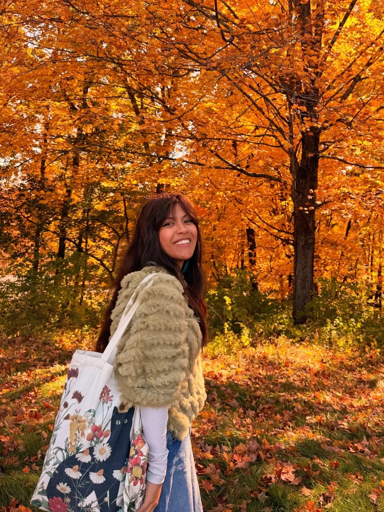

About
Hi! My name is Nia.
I am a PhD Candidate at Harvard. My supervisor is Prof. Andrew Strominger. My research is on flat holography studying bottom-up and top-down models. I have worked on chiral algebras, scattering amplitudes and twisted holography. I am interested in other problems in Black Hole Physics and Cosmology as well.
I started my PhD in August 2025. Before that, I completed the MSc in Mathematical and Theoretical Physics at Oxford. I was elected as a Global Rhodes Scholar representing my home country, Argentina.
I did my bachelors at Northwestern. I majored in physics and math and worked in Prof. John Joseph Carrasco’s group. I also worked with Prof. Gerald Gabrielse, with Dr. Hank Lamm and Dr. Ruth Van De Water at the Theory Division at Fermilab, and with Prof. Kelly Wisecup studying archives at the Newberry Library.

I was born in Buenos Aires. My family is Peruvian of indigenous origin. My mother is chanka and my father has amazonian ancestry. Ever since I was a child, I have enjoyed to paint, write and read. At home, I exhibited work in collaboration with museums Palais de Glace and Museo de Arte Moderno de Buenos Aires under the name Nia Huaytalla. I won the One Book Essay contest at Northwestern for my personal essay “Huaytalla” and the Jane Gimbel Lane Writing Price for my essay on Evar Hussayni’s visual art project, “Kurdish Women breathing, existing.” My poetry was published in Helicon Magazine Spring 2021 edition at Northwestern and in the 2026 edition of the Harvard Graduate Review.
I am very passionate about making physics and math education accessible, and expanding representation in physics and math. I also believe in the importance of an interdisciplinary education and making connections between STEM fields and the humanities.
I have two substack pages: Memos of a Physicist, where I share about my life in academia, physics topics, contemplations or cool things I have read recently, and Amapolas, where I share unpublished works of fiction and poetry in Spanish and English.
Something that made me very happy was when MoMA reposted my photo. I also made a habit of befriending the local birds.
Current book recs: Hidden Figures, On the Nature of Things, Eros the Bittersweet, and the Glass Bead Game.